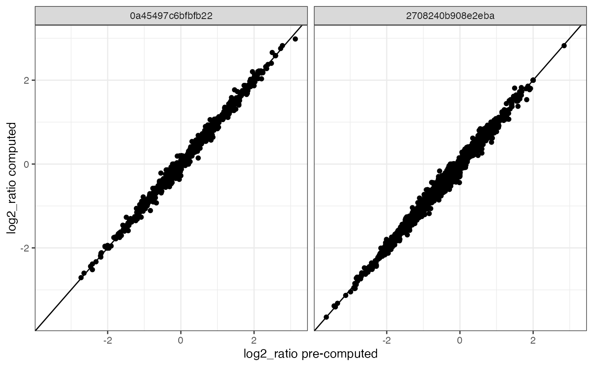

Compute proximity scores
ComputeProximityScores.RdThis function computes proximity scores for pairs of proteins in a PNA graph. First, the observed join_counts are calculated. The direction of the join counts is ignored, meaning that the join_counts are combined for both directions (e.g. A/B = B/A).
Usage
ComputeProximityScores(object, ...)
# S3 method for class 'CellGraph'
ComputeProximityScores(
object,
mode = c("analytical", "permutation"),
k = 1L,
iterations = 100L,
calc_z_score = TRUE,
calc_log2_ratio = TRUE,
min_marker_count = 10,
seed = 123,
...
)
# S3 method for class 'list'
ComputeProximityScores(
object,
mode = c("analytical", "permutation"),
k = 1L,
iterations = 100L,
calc_z_score = TRUE,
calc_log2_ratio = TRUE,
min_marker_count = 10,
seed = 123,
cl = NULL,
...
)
# S3 method for class 'PNAAssay'
ComputeProximityScores(
object,
mode = c("analytical", "permutation"),
k = 1L,
cells = NULL,
iterations = 100L,
calc_z_score = TRUE,
calc_log2_ratio = TRUE,
min_marker_count = 10,
seed = 123,
cl = NULL,
...
)
# S3 method for class 'PNAAssay5'
ComputeProximityScores(
object,
mode = c("analytical", "permutation"),
k = 1L,
cells = NULL,
iterations = 100L,
calc_z_score = TRUE,
calc_log2_ratio = TRUE,
min_marker_count = 10,
seed = 123,
cl = NULL,
...
)
# S3 method for class 'Seurat'
ComputeProximityScores(
object,
mode = c("analytical", "permutation"),
k = 1L,
assay = NULL,
cells = NULL,
iterations = 100L,
calc_z_score = TRUE,
calc_log2_ratio = TRUE,
min_marker_count = 10,
seed = 123,
cl = NULL,
...
)Arguments
- object
An object containing PNA graph data.
- ...
Additional arguments. Currently not used.
- mode
Either "analytical" or "permutation". If "analytical", the expected join counts and standard deviations are calculated using analytical formulas. If "permutation", the expected join counts and standard deviations are calculated using permutations.
- k
![[Experimental]](figures/lifecycle-experimental.svg) The maximum number of steps in the local
neighborhood to consider. Default is to only include immediate neighbors.
The maximum number of steps in the local
neighborhood to consider. Default is to only include immediate neighbors.- iterations
Number of iterations for permutation. Default is 100.
- calc_z_score
Logical indicating whether to calculate z-scores.
- calc_log2_ratio
Logical indicating whether to calculate log2 ratios.
- min_marker_count
Minimum number of UMI counts required for a protein to be considered.
- seed
Random seed for reproducibility.
- cl
Number of threads to use for parallel processing. Only used on unix systems. If
NULL, sequential processing is used.- cells
A vector of cell names to compute proximity scores for.
- assay
Name of the
PNAAssayorPNAAssay5to use for computing proximity scores.
Value
A tibble with the following columns:
marker_1: Name of the first marker.marker_2: Name of the second marker.join_count: Observed join count.join_count_expected_mean: Expected mean join count.join_count_expected_sd: Expected standard deviation of the join count. (only if k = 1)join_count_z: Z-score for the observed join count. (optional for k = 1)log2_ratio: Log2 ratio of observed join count to expected mean. (optional)component: PNA component name. Only provided for some methods.
Details
The mean and standard deviations are calculated either from permutations or using analytical formulas. See details below.
Finally, two proximity metrics are computed from the resulting join_count statistics.
Analytical proximity score
The expected mean is calculated as \(p_{umi1,m1} * p_{umi2,m2} * S0\), where \(p_{umi1,m1}\) and \(p_{umi2,m2}\) are the frequencies of the two markers in the graph for umi1 and umi2 nodes, respectively. \(S0\) is the total number of edges in the graph. The formula for the variance of the join count statistic is given by (eq. 8, Epperson, B. K. 2002): $$ Var_{m1m2} = \frac{1}{4} \times (2S1p_{umi1,m1}p_{umi2,m2} + (S2 - 2S1)(p_{umi1,m1}p_{umi2,m2}(p_{umi1,m1} + p_{umi2,m2})) + 4(S1 - S2)(p_{umi1,m1}^2p_{umi2,m2}^2)) $$
where
$$ S1 = \frac{1}{2} \times (\sum_{i,j} (A_{ij} + A_{ji})^2) $$
and
$$ S2 = \sum_{i} \left(\sum_{j} (A_{ij} + A_{ji})^2\right) $$
Permuted proximity score
The expected mean and standard deviation are calculated from a number of permutations of the graph. In each permutation, the marker labels of the nodes are shuffled, and the join counts are recalculated. The expected mean is then calculated as the mean of the join counts across all permutations, and the expected standard deviation is calculated as the standard deviation of the join counts across all permutations.
Examples
library(dplyr)
cg <- ReadPNA_Seurat(minimal_pna_pxl_file()) %>%
LoadCellGraphs(cells = colnames(.)[1], verbose = FALSE) %>%
CellGraphs() %>%
.[[1]]
#> ✔ Created a <Seurat> object with 5 cells and 158 targeted surface proteins
ComputeProximityScores(cg) %>%
filter(join_count_z > 3)
#> # A tibble: 167 × 7
#> join_count join_count_expected_mean join_count_expected_sd marker_1 marker_2
#> <dbl> <dbl> <dbl> <chr> <chr>
#> 1 74 48.3 5.46 CD371 CD371
#> 2 41 26.7 3.96 CD18 CD18
#> 3 8 1.85 0.984 CD156c CD156c
#> 4 11204 10197. 103. CD59 CD59
#> 5 4 0.830 0.654 Siglec-9 Siglec-9
#> 6 6 1.33 0.830 CD162 CD50
#> 7 12 3.09 1.27 CD50 Siglec-9
#> 8 8 2.88 1.24 CD50 CD50
#> 9 6 1.63 0.918 CD156c CD47
#> 10 10 3.50 1.36 CD43 Siglec-9
#> # ℹ 157 more rows
#> # ℹ 2 more variables: join_count_z <dbl>, log2_ratio <dbl>
library(ggplot2)
se <- ReadPNA_Seurat(minimal_pna_pxl_file()) %>%
LoadCellGraphs(cells = colnames(.)[1:2], verbose = FALSE)
#> ✔ Created a <Seurat> object with 5 cells and 158 targeted surface proteins
# Compute proximity scores for selected cells
proximity_scores <- ComputeProximityScores(se, cells = colnames(se)[1:2])
# Compare with available proximity scores
proximity_scores %>%
left_join(ProximityScores(se %>% subset(cells = colnames(se)[1:2])),
by = c("marker_1", "marker_2", "component"),
suffix = c("_post", "_pre")
) %>%
na.omit() %>%
ggplot(aes(log2_ratio_pre, log2_ratio_post)) +
geom_abline() +
geom_point() +
theme_bw() +
labs(x = "log2_ratio pre-computed", y = "log2_ratio computed") +
facet_grid(~component)
